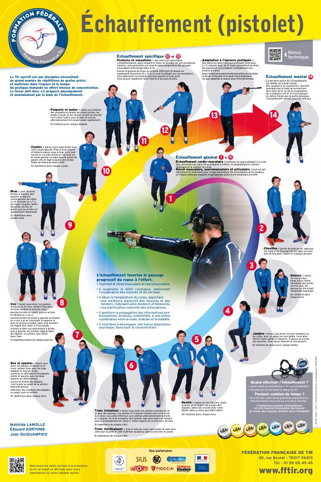

S'entraîner : les exercices pratiques
Observer, puis travailler le lâcher, l'échauffement, la position, le placement et la visée, avec des exercices concrets pour le pas de tir et la maison.
Observer pour progresser
L'observation permet de savoir sur quoi travailler. Un geste se travaille en trois temps : on l'apprend, on le perfectionne, puis on l'automatise.
Le regard extérieur le plus précis.
Travailler à deux et s'observer mutuellement.
Se filmer, se regarder dans un miroir, tenir son carnet de tir.
Une caméra fixée sur l'arme trace la ligne de visée. Lire ses tracés SCATT
Le lâcher en pratique
Un bon lâcher, c'est un doigt qui agit sans faire bouger l'arme. Pour le vérifier, regardez les organes de visée au départ du coup : s'ils ne bougent pas, c'est gagné. Pas besoin d'être debout ni même de tirer : assis arme posée, à sec ou à balles, on observe la même chose.
Choisir son exercice
Découvrir le lâcher en pression continue, au club ou à la maison face à un mur blanc. Les 3 exercices
Rien que l'action du doigt, sans visuel ni score. Carton blanc
Le visuel perturbe : rester sur le doigt plutôt que sur le score. Rond noir
La bande verticale et les deux bandes. Les bandes
Des jeux qui forcent à lâcher : l'arbre de duel. Arbre de duel
Garder l'attention sur le lâcher malgré la visée et le score.
Sentir sa détente : 3 exercices à sec
Ces exercices développent la perception du mouvement de détente. À faire face à un mur clair à la maison, ou sur carton blanc au pas de tir, en appui ou non.
1. La pression continue
- Objectif
- Un lâcher progressif et continu.
- Consigne
- Appuyer le plus lentement possible jusqu’au départ, en repérant chaque étape : pré-course, point dur, décrochage, course après décrochage, butée.
- Réussi si
- Le tireur ressent chacun de ces repères. L’entraîneur observe la durée du lâcher.
2. Les paliers
- Objectif
- Fractionner la pression.
- Consigne
- Appuyer, marquer une pause, reprendre, et ainsi de suite jusqu’au départ.
- Réussi si
- Le plus grand nombre de paliers avant le départ du coup.
3. L’aller-retour
- Objectif
- Maîtriser le point dur et la course de détente.
- Consigne
- Appuyer le plus loin possible sans faire partir le coup, revenir sur le point dur, recommencer.
- Réussi si
- Le plus grand nombre d’allers-retours sans départ du coup.
Le lâcher : partage d’expérience
Le lâcher en pratique
Le lâcher en pratique (2)
Pour la théorie, voir Le lâcher.
À voir aussi sur bensport
L'échauffement en pratique
Sans échauffement, le tireur risque de se blesser (muscles, tendons, articulations) et obtient des résultats faibles et irréguliers. Répété à chaque séance, il met le corps dans les mêmes conditions de départ : la performance devient plus constante.
Ce qu'il apporte
- Au corps : muscles plus chauds et plus élastiques, meilleure circulation et meilleure oxygénation, influx nerveux plus rapide, articulations lubrifiées.
- À la tête : moins de stress, plus de vigilance et de concentration.
- Au geste : une meilleure proprioception, donc une meilleure coordination entre visée, lâcher et stabilité.
Puis l'échauffement pistolet, à sec

L'affiche FFTir « Échauffement pistolet »
14 exercices illustrés : échauffement général (cardio, réveil musculaire et articulaire), échauffement spécifique (postures et sensations, poignets et mains, adaptation à l'épreuve) et échauffement mental.
Les exercices détaillés : l'échauffement sur carton blanc et l'échauffement physique en 10 minutes.
Pourquoi s’échauffer ?
L’échauffement sur carton blanc
La position en pratique
La position se construit volontairement, avec exigence, pour se sentir droit et stable, et pour la retrouver identique à chaque fois. La décrire avec ses mots aide à la mémoriser et à la relire avant un match.
1. Construire sa position
- Consigne
- Se placer en position de tir sans relâcher l’exigence ; se sentir droit et stable.
- Variantes
- Devant un miroir ; en se filmant et en décrivant chaque phase à voix haute ; à deux.
2. Les pieds
- Consigne
- 10 plombs pieds joints, 10 pieds écartés de la largeur des épaules, 10 pieds très écartés.
- Ensuite
- Comparer et en tirer ses conclusions.
3. Le poids du corps
- Consigne
- 10 plombs dans chaque situation : poids en avant, en arrière, équilibré, légèrement en avant, sur le pied droit, sur le pied gauche, équilibré droite-gauche.
- Ensuite
- Garder la répartition qui donne le meilleur résultat.
4. Toujours la même position
- Consigne
- Toutes les deux séries, quitter sa position, faire quelques pas, la reconstruire à l’identique.
- Variantes
- Miroir, vidéo commentée, travail à deux.
5. L’écrire
- Consigne
- Dans son carnet de tir, décrire la construction de sa position, le plus précisément possible.
- Intérêt
- Pouvoir la relire avant ou pendant une séance, un match, un moment de concentration.
6. Chausser son arme
- Consigne
- L’arme vient dans la main toujours de la même façon. Chausser sa crosse
- Réussi si
- L’arme est bien placée, la prise est naturelle et sans douleur, l’arme est dans l’axe de la visée en hauteur et en direction.
7. Chausser en prise inversée
- Consigne
- Automatiser la prise inversée, dite de sécurité : le canon reste toujours dirigé vers les cibles.
8. La main faible
- Consigne
- 10 plombs avec l’autre main (main gauche pour un droitier, droite pour un gaucher).
- Intérêt
- Reconstruire entièrement sa position, en pleine conscience.
Pour le verrouillage du poignet : la bande verticale et les deux bandes. Pour la théorie : La position.
Le placement en pratique
Bien se placer, c'est être au bon endroit face à la cible, et dans une position stable pendant tout le match.
1. Se placer de travers
- Consigne
- Volontairement, ne pas se placer face à la cible et tirer 10 plombs : une fois décalé à droite, une fois à gauche.
- Ensuite
- Observer l’effet sur les impacts et sur les sensations.
2. Tester les placements
- Consigne
- Essayer tour à tour : pieds tournés aux 7/8, aux 3/4, face à la cible, puis de profil strict (placement académique).
- Ensuite
- Garder celui qui donne la position la plus stable et la plus naturelle.
Pour s'orienter vers la cible en situation : l'arbre de duel, où les deux tireurs ne sont pas dans le même axe.
La visée en pratique
On aborde l'entrée en cible pas à pas, selon la progression du tireur.
| Couleur | Ce que l’on travaille |
|---|---|
| Blanc Jaune | Le tireur se place au-dessus de la cible puis descend doucement dans la zone de visée. Les plus jeunes s’appuient sur un support fixe. Inutile de parler d’« entrée en cible ». |
| Orange | La notion d’entrée en cible apparaît : l’entraîneur structure cette étape de la séquence et donne des repères visuels. À commencer quand le tireur se place correctement et régulièrement face à sa cible. |
| Bleu | Placement régulier et geste plus précis : des repères visuels de plus en plus fins, jusqu’à ne plus s’appuyer que sur les sensations du corps. |
Les exercices : la visée sur carton blanc et l'entrée en cible. La théorie : La visée.
À voir aussi sur bensport
La visée dans le collimateur·▶ Zone de bouger, zone de confiance
Se remuscler et se renforcer
Reprendre en début de saison
Après un été sans tirer, quelques exercices en début de séance suffisent à remuscler le bras. Sur la cible SQ10, choisir « Outils d'entraînement », puis « Vide (carton blanc) ».
Tenir et remonter
- Séries
- 2 × 10 plombs.
- Consigne
- Après chaque coup, bien tenir, puis sortir de la cible par le haut en remontant lentement, guidon centré dans le cran. Soigner le lâcher.
- Réussi si
- La remontée est lente, guidon toujours centré.
Variante : entre deux bandes
- Réglage SQ10
- Tir de précision › Variante carton › 2 verticales, écart maximal (40) pour commencer.
- Séries
- 3 × 10 plombs.
- Consigne
- Monter au-dessus de la cible, descendre doucement en gardant le cran entre les deux bandes, ralentir au passage du visuel, lâcher, tenir, ressortir par le haut entre les bandes.
- Réussi si
- Le cran reste entre les bandes à la descente comme à la remontée ; la vitesse est contrôlée.
Renforcer le dos et les épaules
Une séance proposée par Sport Quantum, avec le coach sportif Melvin Iddir.
Renforcement du dos et des épaules
La bobine d'Andrieu (wrist roller)
Un accessoire tout simple pour les avant-bras : un manche, une corde et un poids. Bras tendus, on enroule puis on déroule la corde pour monter et descendre le poids. Il s'en fabrique facilement une à la maison. On doit son principe à Richard Andrieu, avocat toulonnais et gymnaste né en 1867.
Plus d'exercices : la préparation physique.
Repris du site MTS Entraînement (entrainement.montirsportif.fr), rubrique « Le tir en pratique ». Les conseils sont donnés à titre d'exemple et ne remplacent pas un entraîneur.
Choisir ses exercices selon l’épreuve
Chaque fiche d’épreuve liste les exercices du site qui la préparent : technique, cible électronique, mental, physique, tactique et cibles à imprimer.
À voir aussi sur bensport
Le regard sur le guidon
Bon ou pas ?
Guidon net, cible floue : c'est bon. Guidon flou, cible nette : le regard est parti en cible ; on repose et on reprend sa séquence. Souvent le regard passe par-dessus l'arme, qui descend ; le tireur s'en aperçoit, remonte… et c'est le yoyo. Les jeunes accommodent plus facilement que les seniors, mais tous doivent garder l'œil sur le guidon seulement.
L'exercice
Objectif : garder le guidon aligné dans le cran de mire.
Matériel : carton blanc, sans projectile.
Consigne : viser en se concentrant sur l'alignement, tenir 5 secondes, reposer 5 secondes ; environ 10 fois. On allonge la tenue en progressant.
Réussite : l'œil ne regarde que le guidon, l'attention reste sur l'alignement.
Le regard est sur le guidon, et sur rien d'autre
L'œil sur le guidon, la cible est floue
Aligner les organes de visée
S'échauffer sur carton blanc
Dérouler sa séquence de tir sur carton blanc, c'est se préparer à l'exécuter de façon complète et reproductible, sans se soucier du score. On commence par le seul lâcher, puis on ajoute le regard sur le guidon, puis le verrouillage du poignet. Sur cible électronique : Outils d'entraînement › Carton blanc.
1. Le lâcher
Sentir la pulpe de l'index s'écraser progressivement sur la queue de détente. Environ 10 fois, avec ou sans munition.
2. Lâcher et regard
Même chose, en gardant le regard sur le guidon pendant tout le lâcher.
3. Lâcher, regard et poignet
On ajoute le verrouillage du poignet : tout le geste est en place pour la séance.
Sentir la pulpe du doigt sur la queue de détente
Visée ou lâcher ?
Lâcher sans déstabiliser l'arme
Assis, arme posée
Sur carton blanc, assis dans une position proche de celle debout, arme posée sur un coussin. Faire partir le coup sans modifier l'alignement du guidon dans le cran de mire, l'attention sur le guidon. Une dizaine de coups, à sec ou avec plomb.
Debout
Même consigne en position de tir. Puis on compare le lâcher sur visuel non zoné et sur carton blanc : la présence d'un visuel change-t-elle le geste ?
Stabilité et attention sur carton blanc
Aligner guidon et cran de mire, puis maintenir la position et l'attention quelques secondes : 5 fois 10 secondes, puis on allonge par paliers. Les vidéos de levées d'arme servent de minuteur.
MonTirSportif – https://pistol.montirsportif.com/s-entrainer.html